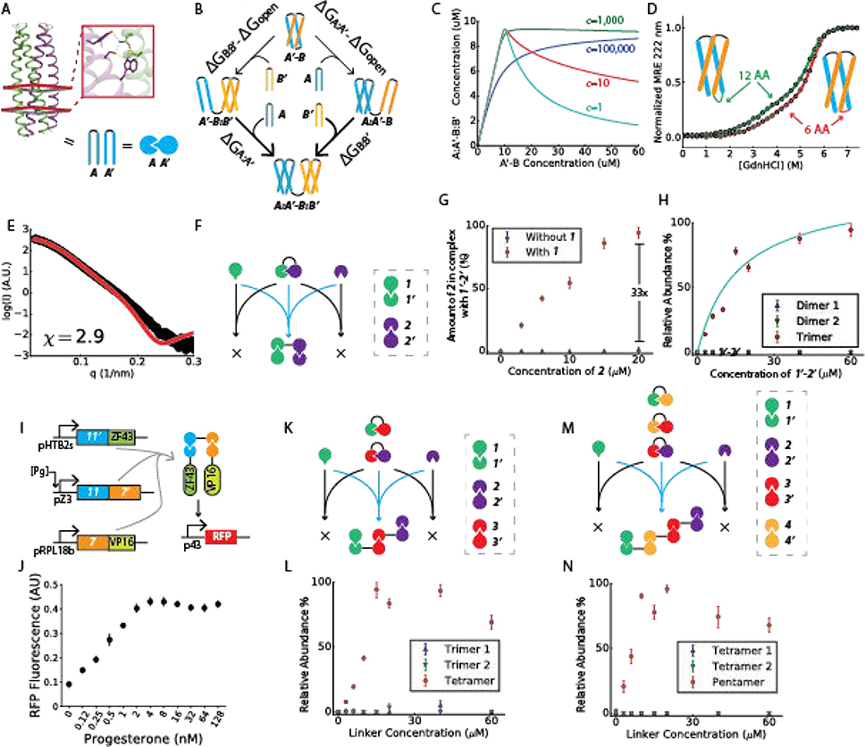
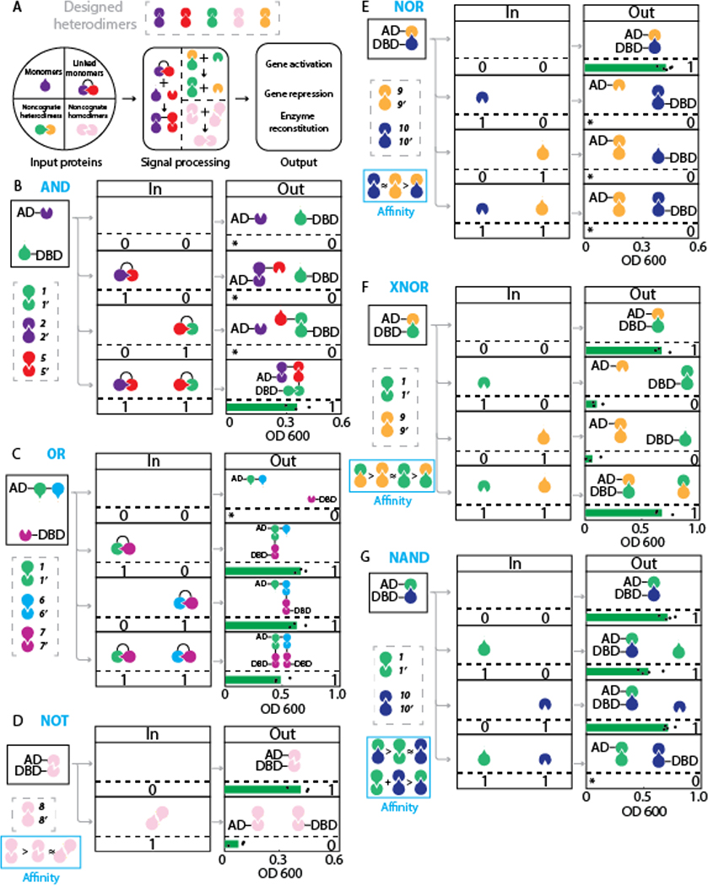
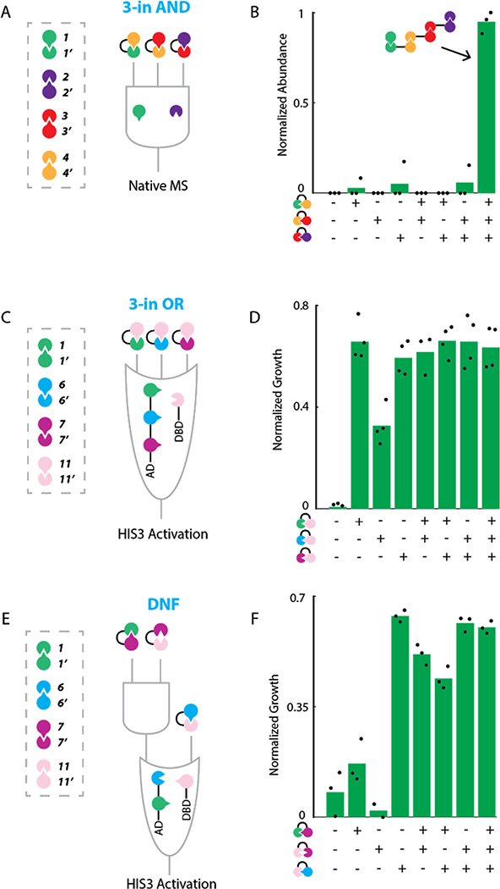
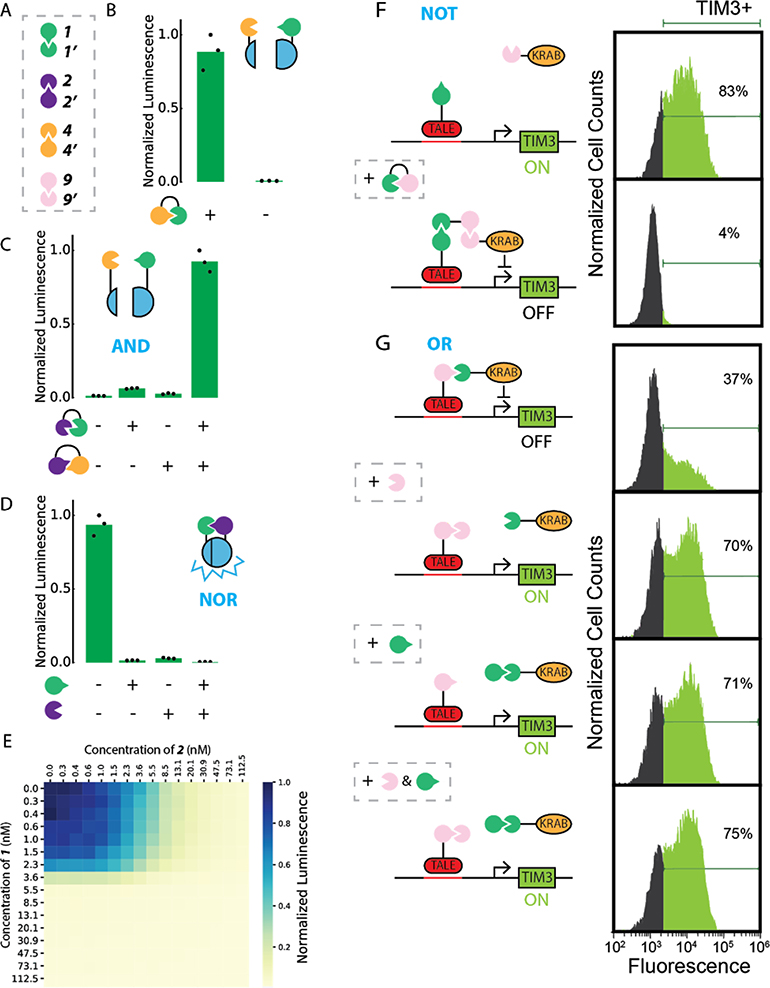

De novo design of protein logic gates
Zibo Chen, Ryan D. Kibler, Andrew Hunt, Florian Busch, Jocelynn Pearl, Mengxuan Jia, Zachary L. VanAernum, Basile I. M. Wicky, Galen Dods, Hanna Liao, Matthew Wilken, Christie Ciarlo, Shon Green, Hana El-Samad, John Stamatoyannopoulos, Vicki H. Wysocki, Michael C. Jewett, Scott E. Boyken, David Baker | Science 368(6486): 78-83 (2020)
翻译说明(请先阅读)
1. 源文本为 PMC 收录的 NIHMS 作者手稿(PMC7397813 / NIHMS1595977,DOI: 10.1126/science.aay2790)的 XML 提取文本。文件开头的期刊元数据串(期刊名、ISSN、PMC/NIHMS 编号、各类日期、作者单位、作者贡献、通讯作者信息等)不是论文正文,按任务要求跳过,本译文自论文摘要起译;作者名单以手稿元数据为准(共 19 位作者,通讯作者 David Baker)。任务说明中给出的部分作者姓名(Matthew G. Unger、Yvana D. Ahdallah、Brian E. Correia)与手稿不符,译文以手稿名单为准。
2. 图表交叉引用样式复原:XML 提取把正文图表引用提取成方括号形式(如 [Fig. 1A]、[Table S1]),与参考文献编号 [n] 样式混用;译文将其复原为期刊常规样式 (Fig. 1A)、(Table S1),并按规范用成对的双尖括号标记(见规范第 3 条)包裹、保留英文原样;参考文献引用([1]–[51])保留原编号样式。
3. 提取丢失的符号按上下文复原:下标(ΔGopen 的 "open" 为下标,译文中写作 ΔG_open;幂式 c=eΔGopen/RT 复原为 c = e^(ΔGopen/RT));希腊字母(μ、Δ);比较与运算符号(≈、>、×,如 4×4)。
4. 连字符归一:原文基因融合连接符混用 "-" 与 "–/−"(如 1’−2’、11–7’),译文将非共价相互作用统一记为 ":",基因融合统一记为 "-"(如 1'-2'、11-7');数字后的撇号统一为直撇号(如 1')。
5. 参考文献格式复原:提取文本中作者名、题名、期刊、卷页、年份、PMID、DOI、PMCID 粘连在一起(如 "NussinovR, ... (2012).2176612610.1039/c1mb05205ePMC7449263"),译文按 PubMed 常规格式加空格与标点分隔复原;内容未作任何增删,参考文献整体保留英文、逐条不译。
6. 致谢资助编号中的 " / "(如 "Y5 / 07-5568")为 XML 换行伪影,已合并为 "Y5/07-5568" 形式;"&" 复原为 "&"。
7. 原文个别笔误按通行理解处理:如 "fusing 8 to both AD or DBD"(依上下文应为 both ... and,译作"把 8 同时融合到 AD 与 DBD");摘要首句作 "post-transcriptional"(转录后)而末句作 "post-translational"(翻译后),两处均按原文直译、未作统一。
8. 本 NIHMS 手稿正文不含"方法(Materials and Methods)"部分(Science 论文的方法位于补充材料),故译文"方法"一节仅作说明;源文本亦不含补充材料的具体内容,正文引用的 Table S1–S8 与 Fig. S1–S7 的图注不在提取文本中,故未翻译,仅保留其引用标记。
9. 术语处理:逻辑门名称(AND/OR/NOT/NAND/NOR/XNOR/DNF)、元件编号(1、1'、1'-2' 等)、系统与基因缩写(CIPHR、DHD、Y2H、nMS、SAXS、CD、NanoBiT、smBiT/lgBiT、TALE、KRAB、TIM3、RFP、AD/DBD、VP16、ZF43、Gal4、His3)保留英文原样,首次出现处辅以中文解释;不常见中文译名后括注英文原词。
10. 图片位置:源提取文本把 4 张主图图注集中放在文末;译文按论文阅读顺序将 @FIG 与图注插入正文相应位置(图片文件 nihms-1595977-f0001~f0004 对应 Figure 1–4)。
第一部分:论文全文翻译
摘要
在转录后(post-transcriptional)水平上调节蛋白质功能的模块化蛋白质逻辑(protein logic)设计,是合成生物学的一大挑战。本文描述了由从头(de novo)设计的蛋白质构建的双输入 AND(与)、OR(或)、NAND(与非)、NOR(或非)、XNOR(同或)与 NOT(非)逻辑门的设计。这些逻辑门在体外、酵母中以及原代人 T 细胞(primary human T cells)中调控从拆分酶(split enzyme)到转录机器(transcriptional machinery)等各种任意蛋白质单元之间的结合;在原代人 T 细胞中,它们控制着与 T 细胞耗竭(T cell exhaustion)相关的 TIM3 基因的表达。经设计而产生的结合相互作用协同性(cooperativity)——已由天然质谱(native mass spectrometry)证实——使这些逻辑门对输入的化学计量失衡(stoichiometric imbalance)基本不敏感;而该方法的模块化特点使其能便捷地扩展为三输入的 OR、AND 与析取范式(disjunctive normal form)门。控制元件的模块化与协同性,加上能够从头设计数量几乎不受限制的蛋白质组分,应能支撑人们为种类繁多的生物学功能设计出精细的翻译后(post-translational)控制逻辑。
引言
蛋白质-蛋白质相互作用(protein-protein interaction)在细胞决策中无处不在,对它们实施控制将在合成生物学中日益重要([1]–[4])。尽管蛋白质相互作用是天然生物回路的核心,但构建新逻辑回路的努力一直集中在 DNA 水平([5]、[6])、转录水平([7]–[18])或 RNA 水平([13]、[19]–[22])的调控上。近来,人们通过重接(rewire)天然信号通路([23]–[28])、用卷曲螺旋(coiled coil)把蛋白质聚拢([29])或构建蛋白酶级联(protease cascade)([30]、[31])等方式实现了基于蛋白质的回路;这些方法依赖于少数几种组分,从而限制了其模块化程度与可扩展性(scalability)。能够从头设计可调节任意蛋白质-蛋白质相互作用的蛋白质逻辑门,有望为细胞内外的新型蛋白质控制系统打开大门。
原则上,利用一套异源二聚体(heterodimer)分子,应当有可能从头设计出种类繁多的逻辑门。例如,给定假想的异源二聚体对 A:A'、B:B' 与 C:C',只需把 A' 与 B 基因融合、把 B' 与 C 基因融合,即可构建一个调节 A 与 C' 之间结合的 AND 门:只有当 A'-B 与 B'-C 两者同时在场时,结合才会发生(本文及下文中,":"表示非共价相互作用,"-"表示通过柔性接头(linker)实现的基因融合)。要构建此类"缔合式"逻辑门,构建元件(building block)最好具备下述几项性质。第一,应当存在大量彼此正交(orthogonal,即相互之间不发生交叉反应)的异源二聚体对,使门的复杂度不受单个元件数目的限制。第二,构建元件应当模块化且结构彼此相似,从而在搭建逻辑门时无须考虑各元件在形状及其他性质上的差异。第三,单个构建元件应当能以不同且可调的亲和力(affinity)结合多个伙伴,使输入能够通过破坏预先存在的较低亲和力相互作用来执行"非"(negation)运算。第四,相互作用应当具有协同性(cooperative),使门的激活不因输入之间的化学计量失衡而敏感。例如,在上面的 AND 门中,若相互作用不具协同性,大量过量的 A'-B 会把平衡拉向部分组装的复合物(A'-B 只结合 A 或 B'-C 之一而非两者),从而限制门的激活。
在本文中,我们探索了利用具有氢键网络介导特异性(hydrogen bond network-mediated specificity)的从头设计蛋白质异源二聚体([32]),来设计满足上述全部四项标准的逻辑门的可能性。若干套彼此正交的设计异源二聚体(designer heterodimer,下文简称 DHD;后文以数字指称,例如 1 与 1' 构成一个同源配对 cognate pair Table S1)具有氢键网络介导的特异性(例如见 (see Fig. 1A inset for example)),可供逻辑门构建使用,这满足了条件 1(正交性)。这些异源二聚体界面都采用相同的四螺旋束(four-helix bundle)拓扑 (Fig. 1A),满足条件 2(模块化)。共享的相互作用界面使各对之间允许有限程度的串扰(cross talk),从而形成一层层的结合亲和力层级(hierarchy of binding affinities),满足条件 3(多重结合特异性)。受自然界协同系统([33]、[34])的启发,我们谋求以如下方式实现条件 4(协同性):构建单体融合体(上例中的 A'-B 与 B'-C)时,把(与 A 和 C' 的)相互作用界面埋藏在融合体内部。暴露这些被埋界面所需的自由能会阻碍门的激活;我们推断,可以对体系加以调谐,使两个伙伴的结合能之和——而非任何单独一个——足以克服这道能垒(energy barrier),从而确保协同的门激活。若条件 2(模块化)成立,那么原则上,单一一种保证协同性的方案即可适用于多种多样的门构型。
【译注】DHD(designer heterodimer,设计异源二聚体)元件库来自同一团队 2019 年的 Nature 论文([32]):用 Rosetta 从头设计的一批共享四螺旋束拓扑、界面上排布有"氢键网络"的异源二聚体对。氢键网络中的极性残基一旦与错误对象配对,就会留下未能得到满足的氢键供体/受体(donor/acceptor),在能量上受到惩罚,特异性由此被"编码"进界面。编号约定:不带撇的数字(1、2、3……)与带撇数字(1'、2'、3'……)互为同源配对,如 1 与 1' 天生一对;"1'-2'"则表示把单体 1' 与 2' 用柔性接头基因融合而成的融合蛋白(即下文的"二聚化剂")。
结果
为探索协同性构建元件的设计,我们聚焦于一个简单体系 A + A'-B + B'(下文称之为诱导二聚化(induced dimerization),其中 A 与 B' 称为单体,A'-B 称为二聚化剂(dimerizer))。若结合不具协同性,则当 A'-B 相对 A 与 B' 化学计量过量时,三聚体复合物的数量会减少:二聚化剂与任一单体结合所形成的中间二聚体物种,会与三聚体复合物的形成相互竞争。相反,若结合具有协同性,以至于缺少任一单体时对两个单体都不发生结合,则形成的三聚体复合物的量便对二聚化剂的过量不再敏感。一个关于结合协同性如何影响此类诱导二聚化体系化学计量依赖性的简单热力学模型 (Fig. 1B, supplemental materials modeling section) 表明:随着结合协同性降低,在高浓度二聚化剂下完整三聚体复合物的占比会相应下降 (Fig. 1C)。
【译注】协同性参数 c 的直观含义:c = 另一单体存在时的亲和力 ÷ 不存在时的亲和力。若二聚化剂“闭合”状态需 ΔG_open 才能打开,则 c ≈ e^(ΔG_open/RT):ΔG_open 越大,门对“只有一半输入”时的泄漏结合越小,输出对输入过量也越不敏感。室温下 RT ≈ 0.6 kcal/mol,故 ΔG_open = 8.2 kcal/mol 对应 c ≈ e^(8.2/0.6) ≈ 9×10⁵,与下文实测值 991,000 相符。
我们假设,A'-B 二聚化剂采取一种折叠的、类似四螺旋束的状态,即可阻碍其与 A 或 B' 任一者的结合,因为相对疏水的相互作用界面很可能被封存在折叠结构内部 (Fig. S1A)。我们以异源二聚体 1:1' 与 2:2' 为模型体系,测试了连接 A' 与 B 的不同柔性接头长度。在所有测试过的接头长度(0 至 24 个残基之间)下,各构建体(construct)在圆二色谱(circular dichroism, CD)盐酸胍(guanidine hydrochloride, GdnHCl)变性实验中均为已折叠且稳定,去折叠自由能(unfolding free energy)大于 13 kcal/mol (Fig. 1D, Fig. S2, Table S3)。虽然接头为 0 与 2 个残基的短接头、或 24 个残基的超长接头的 1'-2' 二聚化剂构建体能够纯化为单体 (Fig. S1B),但它们容易聚集,原因或许是结构域互换(domain swapping)。相比之下,带 6 与 12 个残基接头的设计基本保持单体状态 (Table S4)。小角 X 射线散射(small-angle x-ray scattering, SAXS)实验([35])表明,它们的流体力学半径(hydrodynamic radius)与折叠的四螺旋束 DHD 相近 (Fig. 1E, Table S2)。这一长度范围的接头很可能允许两个单体(1' 与 2')相互回折,使大体疏水的相互作用界面彼此对贴掩埋;1'-2' 若要与 1 或 2 任一者相互作用,这种结构就必须部分去折叠。这一去折叠能量的大小(Fig. 1B 中的 ΔG_open)决定了门的协同性程度。我们为以下全部实验选择了 6、10 或 12 个残基的接头长度。
我们利用天然质谱(native mass spectrometry, nMS;[36]、[37])在体外研究了诱导二聚化剂体系的协同性;该技术能直接测量样品中各种寡聚物种(oligomeric species)的占比 (Tables S5–S8, for calibration curve see Fig. S3)。我们首先测量了 1 激活 2 与 1'-2' 结合的程度 (Fig. 1F)。1、2 与 1'-2' 分别在大肠杆菌(E. coli)中表达并纯化。当 2 与 1'-2' 各 10 μM 时,加入 20 μM 的 1 后,与 1'-2' 结合成复合物的 2 所占比例从 3% 升至 100% (Fig. 1G);这一增幅与天然存在的别构(allosteric)系统([33])相当。为评估结合对化学计量失衡的敏感性,我们在 10 μM 的 1 与 2 中滴定加入浓度递增的 1'-2' (Fig. 1H),并用 nMS 判定所形成的物种。在很宽的 1'-2' 浓度范围内都观察到了异源三聚体(heterotrimer) 1:1'-2':2 复合物 (Fig. 1H)。即使在 1'-2' 过量 6 倍的情况下,形成的 1:1'-2':2 的量也没有减少,而且既未检测到 1:1'-2',也未检测到 1'-2':2 (Fig. 1H)。我们定义协同性参数 c 为另一单体存在与不存在时亲和力之比;在我们的模型中,它与二聚化剂的打开自由能直接相关(c = e^(ΔGopen/RT),见补充材料(supplementary materials))。将热力学模型拟合到 nMS 数据 (Fig. 1H, cyan line),估计的 c 值为 991,000 ± 21(作为参照,天然 N-WASP 系统的 c 值为 350,但体系差异使定量比较复杂化)。该 c 值对应 ΔG_open 为 8.2 kcal/mol,约为 1'-2' 实测去折叠自由能的一半 (Table S3),提示结合或许并不要求二聚化剂四螺旋束状态的完全去折叠。
为研究诱导二聚化剂体系在活细胞中的协同性,我们在酵母中采用了一种类双杂交(two-hybrid)检测。11' 与 DNA 结合域 ZF43([14])融合,7 与反式激活域(transactivation domain)VP16 融合,而二聚化剂 11-7' 则被置于孕酮(progesterone)响应元件(response element)的控制之下。DNA 结合域与激活域的缔合会引发红色荧光蛋白(red fluorescent protein, RFP)的转录 (Fig. 1I)。用递增量的孕酮处理细胞,RFP 信号最多升高 4.5 倍,且在孕酮浓度饱和时只有小幅下降 (Fig. 1J)。依据校准曲线,在此条件下 11-7' 的摩尔量预计超过 11' 与 7 的 5 倍以上 (Fig. S4),提示 11-7' 在细胞中协同地与 11' 和 7 结合。因此,二聚化剂体系的协同性使其对细胞内组分化学计量的波动具有稳健性(robustness)。
【译注】“双杂交(two-hybrid)”类检测的原理:把一个转录因子拆成 DNA 结合域(DBD)与激活域(AD)两半,分别与待考察的蛋白 X、Y 融合;只有当 X 与 Y 相互作用、把 DBD 与 AD 拉到一起时,才激活报告基因(reporter gene)(此处为 RFP,后文亦用 His3/生长)。本文进一步把“X 与 Y 是否相互作用”交给 CIPHR 门的输入来控制,从而构成“酵母三/四杂交”式的读出(readout)。
既然二聚化剂表现出协同结合,我们推断,这种对某一组分化学计量过量的不依赖性应当能推广到更复杂的门。我们用 nMS 研究了一个双输入 AND 门的协同性:该门以两个二聚化剂 1'-3' 与 3-2' 作为输入,由这两个输入把单体 1 与 2 聚到一起 (Fig. 1K)。随着这 2 种输入浓度的升高,异源四聚体(heterotetramer)复合物的量在化学计量比 2:1 处达到平台,之后大体保持恒定,仅在摩尔比 6:1 时小幅下降。只观察到极少量的部分组装复合物(异源三聚体与异源二聚体),进一步表明高度协同 (Fig. 1L)。我们用 1'-4'、4-3' 与 3-2' 构建了一个三输入 AND 门,三者共同控制 1 与 2 的缔合 (Fig. 1M)。与双输入 AND 门类似,在输入浓度超过化学计量时,完整的五聚体复合物的量仅略有下降,且没有检测到与之竞争的四聚体复合物 (Fig. 1N)。

Figure 1 图注翻译
Figure 1. CIPHR 逻辑门的协同性。
(A) 左:A:A' 异源二聚体构建元件的主链(backbone)结构,插图(inset)展示其氢键网络。下:全文各图通用的简写表示法。
(B) 描述诱导二聚化体系的热力学循环(thermodynamic cycle)。
(C) 热力学平衡下诱导二聚化体系的模拟。A 与 B' 单体各固定为 10 μM,同时滴定加入不同初始量的 A'-B 二聚化剂蛋白。若结合不具协同性(c 较小),则当二聚化剂蛋白过量时,最终三聚体复合物的量减少。
(D) 以 CD 监测的、带 6 与 12 个氨基酸(AA)接头设计的平衡变性(equilibrium denaturation)实验。圆点代表实验数据,曲线为三态单分子去折叠模型(three-state unfolding model)的拟合。
(E) 带 6 残基接头的 1'-2' 的实验 SAXS 散射曲线(黑色),拟合至 1:1' 异源二聚体的计算曲线。
(F) 采用 6 残基接头的诱导二聚化体系。
(G) 在存在(红色)与不存在(蓝色)1 的条件下,2 对 1'-2' 的天然质谱滴定。
(H) 1'-2' 对 1 与 2 的天然质谱滴定。Dimer 1 与 Dimer 2 指二聚化剂与其中任一单体结合形成的部分(二元)复合物。为便于比较,青色曲线给出 c = 991,000 时热力学模型的结果。
(I) 在酵母中检验诱导二聚化体系的示意图,体内结果见 (J)。Pg,孕酮(progesterone)。
(K) 双输入 AND 门示意图,天然质谱滴定结果见 (L)。Trimer 1 与 Trimer 2 指两个二聚化剂蛋白与其中任一单体结合形成的部分三聚体复合物。
(M) 三输入 AND 门,天然质谱滴定结果见 (N)。Tetramer 1 与 Tetramer 2 指三个二聚化剂蛋白与其中任一单体结合形成的部分四聚体复合物。
所有误差棒均以 n = 3 次独立重复实验的标准差表示。
【译注】看图要点:(B)–(C) 是全文的理论核心——协同性 c 越小,二聚化剂过量时三聚体产出越少;(G) 显示单体 1 把 2 与 1'-2' 的结合从 3% 拉到 100%(约 33 倍反式激活(trans-activation));(H) 是协同性的直接证据:即使 1'-2' 过量 6 倍,三聚体 1:1'-2':2 仍不减损,且检测不到任何“半组装”二聚体;(L)、(N) 表明这一性质可推广到双输入与三输入 AND 门。
我们探索了 DHD 的模块化组合 (Table S1),以生成一族双输入的“协同可诱导蛋白质异源二聚体”(Cooperatively Inducible Protein HeterodimeR, CIPHR)逻辑门。把来自各个 DHD 的单体经基因融合连接到目标效应蛋白(effector protein)上,使输入(连接了异源二聚体亚基的分子)控制效应蛋白的共定位(colocalization)或解离。利用此前测得的 DHD 全对全(all-by-all)特异性矩阵([32]),我们探索了以两种相互作用模式构建逻辑门:设计蛋白对之间的同源配对结合(cognate binding),或涉及多特异性(multispecific)相互作用的竞争性结合(competitive binding) (Fig. 2A)。
我们从构建 AND 门与 OR 门入手,采用与既往报道的酵母四杂交(yeast-four-hybrid)体系([38]、[39])类似的酵母双杂交(yeast two-hybrid, Y2H)装置来读出门功能。构建 AND 门时,我们把 2 融合到 Gal4 激活域(activation domain, AD),把 1 融合到 Gal4 DNA 结合域(DNA binding domain, DBD)。在这一方案中,AD 与 DBD 的共定位以及由此带来的 His3 基因转录激活(transcriptional activation),应当需要两种输入蛋白(1'-5 与 5'-2')同时表达。事实上,在缺乏组氨酸(histidine)的培养基中的生长确实需要两种输入都表达 (Fig. 2B)。OR 门的构建与之类似:把 1-6 融合体连到 AD,把 7' 连到 DBD。两种输入 1'-7 或 6'-7 中任意一种的表达,都能通过驱动 AD 与 DBD 缔合而使细胞生长 (Fig. 2C)。
我们进而利用全对全 Y2H 实验中鉴定出的结合亲和力层级([32]),探索了更多布尔(Boolean)逻辑门的构建。8 单独存在时形成同源二聚体(homodimer),但在 8' 存在时解离形成 8:8' 异源二聚体 (Fig. S5A)。我们把 8 同时融合到 AD 与 DBD,构建了一个 NOT 门;8:8 同源二聚体支持酵母生长,但当共表达 8' 输入蛋白时,这一相互作用被破坏,生长随之减慢 (Fig. 2D)。基于亲和力层级 9:9' ≈ 10:10' > 9:10' (Fig. S5B),我们构建了一个 NOR 门:9 融合到 AD,10' 融合到 DBD,9' 与 10 为两个输入。两个输入中的任何一个或两者同时存在,都会竞争性地压过 9:10' 相互作用,阻碍酵母生长 (Fig. 2E)。基于亲和力层级 9':1' > 9:9' ≈ 1:1' > 9:1 (Fig. S5B),我们构建了一个 XNOR 门:9 融合到 AD,1 融合到 DBD,9' 与 1' 作为两个输入——任一输入的存在都会压过 9:1 结合、阻断生长;而当两者同时表达时,它们转而彼此相互作用,于是可观察到生长 (Fig. 2F)。类似地,基于相互作用层级 1':10' > 1:1' ≈ 10:10' > 1:10 (Fig. S5B) 设计了一个 NAND 门。无论 1 还是 10 单独存在都不能压过 1':10' 相互作用,因而发生生长;但当两者同时表达时,形成 1:1' 与 10:10' 的自由能之和超过 1':10',生长被阻断 (Fig. 2G)。

Figure 2 图注翻译
Figure 2. CIPHR 双输入逻辑门。
(A) CIPHR 门由 DHD 构建(上方),以单体或共价相连的单体作为输入(左侧);有些门只利用设计的同源配对相互作用(中图左侧),另一些则利用观测到的结合亲和力层级(中图右侧)。
(B-C) 基于正交 DHD 相互作用的双输入 AND(B)与 OR(C)CIPHR 逻辑门。
(D-G) 由多特异性与竞争性蛋白质结合构成的 NOT(D)、NOR(E)、XNOR(F)与 NAND(G)CIPHR 逻辑门。对每个门,黑点代表经背景生长校正后的单次 Y2H 生长测量值,绿色柱为其平均值。＊表示无超过背景的酵母生长。中、右两块中的 0 和 1 分别代表不同的输入状态与预期输出。
【译注】看图要点:每张子图从左到右依次为“元件连线图—真值表(truth table)(0/1)—实验读出”。AND/OR 门只把“同源配对”当开关用;NOT/NOR/XNOR/NAND 门则把“亲和力层级”当原料:更强的配对会拆散更弱的配对,输入因此可以执行“取反”运算。绿柱为平均值,黑点为单次测量,＊表示无生长。
我们接下来研究了三输入 CIPHR 逻辑门。我们首先用天然质谱表征了一个三输入 AND 门 (Fig. 1M):单体 1 与 2 由三种输入 1'-4'、4-3' 与 3-2' 拉到近旁。我们在 1 与 2 都存在的条件下,实验测试了全部八种可能的输入组合 (Fig. 3A),并用 nMS 对所有复合物进行定量。与三输入 AND 门的功能一致,只有当三种输入全部在场时,1 与 2 才出现显著的共组装 (Fig. 3B)。
为在细胞中检验三输入 CIPHR 门的功能,我们用同样的 4 对 DHD 设计了另外两个门,并以 Y2H 检验。构建三输入 OR 门时,把 1'-6-7 融合到 AD,把 11' 融合到 DBD。3 种输入(11-1、11-6'、11-7')中的任意一种,都能分别经由 1'、6 或 7 把 AD 与 DBD 连接起来 (Fig. 3C)。Y2H 结果证实了该逻辑门在细胞中的预期行为:任何一种输入蛋白都能诱导细胞生长 (Fig. 3D)。我们还构建了一个 CIPHR 析取范式(disjunctive normal form, DNF;[A AND B] OR C)门:把 1'-6 融合到 AD、11' 融合到 DBD,输入为 11-7'、7-1 或 11-6' (Fig. 3E)。在 Y2H 实验中,DNF 门按设计运行:当没有输入、或 11-7' 与 7-1 两种输入蛋白只存在其一时,酵母生长水平低;其余情形下生长水平高 (Fig. 3F)。

Figure 3 图注翻译
Figure 3. 三输入 CIPHR 逻辑门。
(A) 三输入 AND 门示意图。
(B) 天然质谱结果表明,只有三种输入全部存在时,三输入 AND 门才被正确激活。
(C) 三输入 OR 门示意图。
(D) Y2H 结果证实,任一输入均可激活三输入 OR 门。
(E) DNF 门示意图。
(F) Y2H 结果证实该门被正确激活。对每个门,黑点代表单次测量值,绿色柱为其平均值。对基于 Y2H 的测量(D、F),生长测量值均经背景生长校正。
【译注】看图要点:(B) 用 nMS 把三输入 AND 的全部 8 种输入组合一一过秤;(D)、(F) 用 Y2H 验证三输入 OR 与 DNF([A AND B] OR C)门。由于任意布尔函数都可写成析取范式,能实现 DNF 即意味着这套元件原则上可组合出任意逻辑——这是“通用性”的关键证据。
为检验 CIPHR 逻辑门的可迁移性(transferability),我们探索了 CIPHR 门通过控制 NanoBiT 拆分荧光素酶(split luciferase)系统两个半段之间的结合、从而重建拆分酶活性的能力([40]–[42])。把来自 1:1'、2:2'、4:4' 与 9:9' 的单体 (Fig. 4A) 两两融合到两个拆分段(smBiT 与 lgBiT)上,经体外转录与翻译(in vitro transcription and translation)产生;这带来了快速测试循环,使完整的 4×4 相互作用亲和力层级可以通过混合后监测荧光素酶活性加以测定 (Fig. S6A)。基于这一层级,我们构建并在实验上验证了一个诱导二聚化回路:以 4-smBiT、1-lgBiT 为组分、1'-4' 为输入 (Fig. 4B, Fig. S6C–D);对响应时间依赖性的表征显示,加入输入 5 分钟后信号升高 7 倍 (Fig. S6D)。我们还构建了一个 AND 门(4-smBiT、1-lgBiT,输入为 1'-2 与 2'-4' (Fig. 4C))与一个 NOR 门(1'-smBiT、2'-lgBiT,输入为 1 与 2 (Fig. 4D)),两者的门功能(即荧光素酶活性)对输入的依赖关系均与设计一致。我们研究了 NOR 门对输入浓度变化的响应(两种 NanoBiT 组分固定为 5 nM),发现两种输入各自在约 5 nM 附近引起信号骤降,与 NOR 逻辑一致 (Fig. 4E, Fig. S6E)。
【译注】NanoBiT 是拆分型 NanoLuc 荧光素酶报告系统:大片段 lgBiT 与小肽 smBiT 自身亲和力极弱,两者互补(complementation)拼合后才有发光活性,广泛用于检测蛋白质相互作用。把 smBiT/lgBiT 分别融合到 DHD 单体上,即可用化学发光直接读出门的真值表;配合体外转录翻译(cell-free)体系,测试无须经过活细胞,一轮组合筛选一天内即可完成。
工程化 T 细胞疗法是颇具前景的治疗模式([43]–[45]),但它们治疗实体瘤的疗效至少部分受限于 T 细胞耗竭(T cell exhaustion)([46]、[47])。包括 TIM3 在内的免疫检查点(immune checkpoint)基因被认为在调控 T 细胞耗竭中扮演关键角色([48]–[50])。为了让此类蛋白质的转录置于 CIPHR 逻辑门的控制之下,我们利用了原代 T 细胞中针对免疫检查点基因的高效、选择性转录阻遏蛋白(transcriptional repressor):它们把序列特异的类转录激活因子效应物(transcription activator-like effector, TALE)DNA 结合域与 Krüppel 相关框(Krüppel-associated box, KRAB)阻遏域(repressor domain)组合在一起([51])。在拆分体系中,与 DHD 单体融合的 DNA 识别域和与互补 DHD 单体融合的阻遏域相互配对时,阻遏活性仍得以保留([51])。我们推断,若让 DNA 识别功能与转录阻遏功能的接合依赖于 CIPHR 门,便可把这一系统用于构建可编程的治疗器件。当以靶基因的表达水平作为输出时,使用阻遏域实际上使 CIPHR 门的逻辑发生了反转。
【译注】(1) TALE 的重复模块约每个模块识别一个碱基,可按需拼接出识别任意启动子序列的 DNA 结合域;KRAB 是强转录阻遏域,通过招募染色质沉默机制(chromatin silencing)压制附近基因。TALE 与 KRAB 融合即构成靶向阻遏蛋白。(2) TIM3(基因名 HAVCR2)是 T 细胞表面的免疫检查点分子,其持续表达与慢性抗原刺激下的“T 细胞耗竭”(效应功能逐渐丧失)相关;实体瘤微环境常诱导 T 细胞耗竭,这是 CAR-T 等过继性 T 细胞疗法对实体瘤疗效不佳的重要原因之一。(3) 输出端用阻遏域时,门的逻辑被“镜像”:门开启 → TIM3 受阻遏 → 表达下降;因此测得的基因表达谱对应 NOT/OR 的反向读出。
为检验这一概念的可行性,我们使用了一个经工程化改造、可阻遏免疫检查点基因 TIM3 的 TALE-KRAB 融合蛋白([51])。我们设计了一个 NOT 门:1 与 TALE DNA 识别域融合,9' 与 KRAB 融合,二聚化剂蛋白 1'-9 作为输入 (see Fig. S7A for T cell DHD specificity matrix)。在此方案中,1'-9 把 KRAB 带到 TALE 所结合的启动子区域,从而触发对 TIM3 的阻遏 (Fig. 4F)。利用 9 与 1' 之间的相互作用,我们用 9-TALE 与 1'-KRAB 融合蛋白构建了一个 OR 门:无输入时 TIM3 受阻遏;而加入 9' 或 1 中任一者后,较弱的 9:1' 相互作用被更强的 9:9' 与 1:1' 相互作用竞争性取代,TIM3 的表达得以恢复 (Fig. 4G)。这些结果表明,CIPHR 与 TALE-KRAB 系统的组合可直接应用于为过继性 T 细胞疗法(adoptive T cell therapy)增添信号处理能力。

Figure 4 图注翻译
Figure 4. CIPHR 逻辑门的可迁移性。
(A) 四对 DHD 经模块化组合,构建出可用于控制不同功能的 CIPHR 逻辑门:(B-E)拆分荧光素酶的催化活性,(F-G)原代人 T 细胞中的基因表达。
(B) 诱导二聚化体系、(C) AND 门与 (D) NOR 门,均与 NanoBiT 拆分荧光素酶系统偶联,经体外翻译并监测发光加以检验。
(E) 在把 1'-smBiT 与 2'-lgBiT 固定为 5 nM 的条件下,对 (D) 中 NOR 门两种输入进行的体外滴定。
(F) NOT 门与 (G) OR 门,采用拆分 TALE-KRAB 阻遏系统控制原代人 T 细胞中 TIM3 蛋白的表达,经流式细胞术(flow cytometry)检验。
【译注】看图要点:同一套 DHD 元件接上了两类完全不同的“执行器”(actuator)——(B)–(E) 输出为发光(拆分荧光素酶),(F)–(G) 输出为人原代 T 细胞中的 TIM3 蛋白表达(流式检测);(E) 中输入浓度约 5 nM 处信号骤降,对应竞争性结合的阈值,体现 NOR 逻辑。
讨论
本文所述逻辑门的系统化设计,得益于从头蛋白质设计的优势。由于作为构建元件的异源二聚体是经从头设计得到的,与改造既有生物基序(motif)相比,可以生成数量多得多的、整体拓扑几乎相同的门构建组分。用设计的氢键网络编码特异性,使结构相似的单体之间能够呈现范围宽广的结合亲和力,进而允许构建基于竞争性结合的更复杂逻辑门。从蛋白质生物物理学的角度看,我们的结果凸显了蛋白质复合物从头设计与天然质谱之间的强力协同,也更一般地凸显了从头蛋白质设计生成复杂协同组装体的能力。例如,对 Fig. 1G 中 33 倍结合反式激活(trans-activation)的检测与定量,关键依赖于天然质谱分辨溶液中全部形成物种的能力;对 Fig. 3B 中三输入逻辑门的分析,则需要把设计的异源五聚体(heteropentamer)组装体——由五条彼此不同的蛋白链组成——与数目极其庞大的其他可能的异源四聚体、三聚体及二聚体复合物区分开来。生成由五条不同多肽链组成、高度协同且结构明确的组装体的能力表明,从头蛋白质设计正开始逼近天然蛋白质组装体的复杂度——而后者承担着大部分的生物学功能。
与基于核酸的逻辑门不同,CIPHR 门可以直接偶联到任意的蛋白质执行结构域(actuation domain),从而在功能输出的类型上提供更大的多样性。我们在此展示了与转录激活、转录阻遏(transcriptional repression)以及拆分酶重建的偶联;原则上,任何能通过蛋白质-蛋白质缔合加以调制的功能,都可以置于 CIPHR 门的控制之下。由于设计组分均为超稳定(hyperstable)蛋白,且不需要额外的细胞机器,这些门应当在细胞内外广泛的条件范围内都能工作(本文在纯化组分、无细胞提取物、酵母细胞和 T 细胞中演示了功能)。DHD 尺寸小、因而遗传载荷(genetic payload)也小,这使其对哺乳动物细胞工程颇具吸引力。借助蛋白酶解激活(proteolytic activation),如同近期精巧的基于蛋白酶的蛋白质回路([30]、[31])那样,回路的精巧程度还可以进一步提高;而我们这些纯粹基于蛋白质相互作用的回路,优势在于生物正交性(bioorthogonality)、已验证的可扩展至三输入的可伸缩性(scalability)、可组合性(composability;输出与输入及“计算机器”一样,都是具有共同设计特征的构建元件之间的相互作用),以及可扩展性(extensibility)——因为借助从头设计,可以创建几乎无限容量的异源二聚体构建元件库。
补充材料
说明:手稿此处为补充材料占位(Supplementary Materials,含 Table S1 等);正文中引用的 Table S1–S8、Fig. S1–S7 及建模(modeling)部分均见论文在线版的补充材料文件,其具体内容未包含在本提取文本中。
方法
说明:本 NIHMS 作者手稿正文不含“材料与方法(Materials and Methods)”部分(Science 论文的方法置于补充材料中),故此处无正文可译;实验细节(模型推导、蛋白表达纯化、nMS/SAXS/CD、酵母与 T 细胞实验等)均见补充材料。
致谢
我们感谢 A. Ng、T. Nguyen、D. Younger、M. Xie 与 B. Groves 协助酵母实验;感谢 C. Chow 协助蛋白质纯化;感谢 W. Lim 就蛋白质结合协同性进行讨论;感谢 M. Elowitz、R. Schulman 与 N. Woodall 对手稿的反馈;感谢 S. Bermeo、M. Lajoie 与 A. Ljubetič 的有益讨论;感谢 S. Pennington 为 Y2H 实验配制培养基。
资助: 本工作受以下支持:霍华德·休斯医学研究所(HHMI)(D.B.);Eric 与 Wendy Schmidt 夫妇经 Schmidt Futures 项目推荐的慷慨资助(D.B. 与 Z.C.);IPD-华盛顿州资助 Y5/07-5568(D.B.);NIH BTRR 酵母资源资助 Y8-12/61-3650(Z.C. 与 R.D.K.);Bruce 与 Jeannie Nordstrom 及 Patty 与 Jimmy Barrier 对蛋白质设计研究所的馈赠(Z.C. 与 R.D.K.);Spark ABCA4/63-3819(Z.C.);NIH P41 GM103533(R.D.K.);Open Philanthropy(D.B. 与 B.I.M.W.);EMBO/80-7223(B.I.M.W.);Burroughs Wellcome Fund 科学界面职业奖(S.E.B.);陆军研究办公室 W911NF-18-1-0200(M.C.J.);空军研究实验室卓越中心资助 FA8650-15-2-5518(M.C.J.);David 与 Lucile Packard 基金会(M.C.J.);以及 Camille Dreyfus 教师-学者计划(M.C.J.)。A.H. 受美国国防部(DOD)“国家防御科学与工程研究生奖学金(NDSEG)”计划资助。T 细胞工程工作受葛兰素史克(GlaxoSmithKline)向 Altius 生物医学科学研究所的慈善捐助(J.R.P.、H.L.、M.W.、C.C.、J.A.S.)以及 NHLBI 资助 7R33HL120752(J.A.S.)支持。V.H.W. 受美国国立卫生研究院资助 P41 GM128577 及俄亥俄杰出学者基金支持。H.E.-S. 受国防高级研究计划局(DARPA)合同 HR0011-16-2-0045 资助,并是 Chan-Zuckerberg 研究员。SAXS 数据在劳伦斯伯克利国家实验室(LBNL)的先进光源(Advanced Light Source, ALS)采集,受 NIH 下列资助(P30 GM124169-01、ALS-ENABLE P30 GM124169 与 S10OD018483)、NCI SBDR(CA92584)以及 DOE-BER IDAT(DE-AC02-05CH11231)支持。
利益冲突: Z.C.、S.E.B. 与 D.B. 是美国专利申请 PCT/US19/59654 的共同发明人,该申请涵盖本文所述发现。D.B. 是 Lyell Immunopharma 与 Sana Biotechnology 的联合创始人并持有其股权。J.P. 与 S.E.B. 持有 Lyell Immunopharma 的股权。
数据与材料可用性: 天然质谱实验的原始数据已存放于 http://files.ipd.uw.edu/pub/de_novo_logic_2019/190522_native_ms_raw.zip。本研究中使用的质粒与计算机代码可向通讯作者索取。
参考文献(References,保留英文原文,不翻译)
1. Nussinov R, How do dynamic cellular signals travel long distances? Mol. Biosyst. 8, 22–26 (2012). PMID: 21766126; doi: 10.1039/c1mb05205e; PMCID: PMC7449263
2. Reinke AW, Baek J, Ashenberg O, Keating AE, Networks of bZIP protein-protein interactions diversified over a billion years of evolution. Science. 340, 730–734 (2013). PMID: 23661758; doi: 10.1126/science.1233465; PMCID: PMC4115154
3. Antebi YE, Linton JM, Klumpe H, Bintu B, Gong M, Su C, McCardell R, Elowitz MB, Combinatorial Signal Perception in the BMP Pathway. Cell. 170, 1184–1196.e24 (2017). PMID: 28886385; doi: 10.1016/j.cell.2017.08.015; PMCID: PMC5612783
4. Harris BZ, Lim WA, Mechanism and role of PDZ domains in signaling complex assembly. J. Cell Sci. 114, 3219–3231 (2001). PMID: 11591811; doi: 10.1242/jcs.114.18.3219
5. Seelig G, Soloveichik D, Zhang DY, Winfree E, Enzyme-free nucleic acid logic circuits. Science. 314, 1585–1588 (2006). PMID: 17158324; doi: 10.1126/science.1132493
6. Qian L, Winfree E, Scaling up digital circuit computation with DNA strand displacement cascades. Science. 332, 1196–1201 (2011). PMID: 21636773; doi: 10.1126/science.1200520
7. Elowitz MB, Leibler S, A synthetic oscillatory network of transcriptional regulators. Nature. 403, 335–338 (2000). PMID: 10659856; doi: 10.1038/35002125
8. Gardner TS, Cantor CR, Collins JJ, Construction of a genetic toggle switch in Escherichia coli. Nature. 403, 339–342 (2000). PMID: 10659857; doi: 10.1038/35002131
9. Tamsir A, Tabor JJ, Voigt CA, Robust multicellular computing using genetically encoded NOR gates and chemical “wires.” Nature. 469, 212–215 (2011). PMID: 21150903; doi: 10.1038/nature09565; PMCID: PMC3904220
10. Siuti P, Yazbek J, Lu TK, Synthetic circuits integrating logic and memory in living cells. Nat. Biotechnol. 31, 448–452 (2013). PMID: 23396014; doi: 10.1038/nbt.2510
11. Bonnet J, Yin P, Ortiz ME, Subsoontorn P, Endy D, Amplifying genetic logic gates. Science. 340, 599–603 (2013). PMID: 23539178; doi: 10.1126/science.1232758
12. Weinberg BH, Pham NTH, Caraballo LD, Lozanoski T, Engel A, Bhatia S, Wong WW, Large-scale design of robust genetic circuits with multiple inputs and outputs for mammalian cells. Nat. Biotechnol. 35, 453–462 (2017). PMID: 28346402; doi: 10.1038/nbt.3805; PMCID: PMC5423837
13. Ausländer S, Ausländer D, Müller M, Wieland M, Fussenegger M, Programmable single-cell mammalian biocomputers. Nature. 487, 123–127 (2012). PMID: 22722847; doi: 10.1038/nature11149
14. Khalil AS, Lu TK, Bashor CJ, Ramirez CL, Pyenson NC, Joung JK, Collins JJ, A synthetic biology framework for programming eukaryotic transcription functions. Cell. 150, 647–658 (2012). PMID: 22863014; doi: 10.1016/j.cell.2012.05.045; PMCID: PMC3653585
15. Roquet N, Soleimany AP, Ferris AC, Aaronson S, Lu TK, Synthetic recombinase-based state machines in living cells. Science. 353, aad8559 (2016). PMID: 27463678; doi: 10.1126/science.aad8559
16. Andrews LB, Nielsen AAK, Voigt CA, Cellular checkpoint control using programmable sequential logic. Science. 361, eaap8987 (2018). PMID: 30237327; doi: 10.1126/science.aap8987
17. Angelici B, Mailand E, Haefliger B, Benenson Y, Synthetic Biology Platform for Sensing and Integrating Endogenous Transcriptional Inputs in Mammalian Cells. Cell Rep. 16, 2525–2537 (2016). PMID: 27545896; doi: 10.1016/j.celrep.2016.07.061; PMCID: PMC5009115
18. Lohmueller JJ, Armel TZ, Silver PA, A tunable zinc finger-based framework for Boolean logic computation in mammalian cells. Nucleic Acids Res. 40, 5180–5187 (2012). PMID: 22323524; doi: 10.1093/nar/gks142; PMCID: PMC3367183
19. Green AA, Silver PA, Collins JJ, Yin P, Toehold switches: de-novo-designed regulators of gene expression. Cell. 159, 925–939 (2014). PMID: 25417166; doi: 10.1016/j.cell.2014.10.002; PMCID: PMC4265554
20. Green AA, Kim J, Ma D, Silver PA, Collins JJ, Yin P, Complex cellular logic computation using ribocomputing devices. Nature. 548, 117–121 (2017). PMID: 28746304; doi: 10.1038/nature23271; PMCID: PMC6078203
21. Rinaudo K, Bleris L, Maddamsetti R, Subramanian S, Weiss R, Benenson Y, A universal RNAi-based logic evaluator that operates in mammalian cells. Nat. Biotechnol. 25, 795–801 (2007). PMID: 17515909; doi: 10.1038/nbt1307
22. Wroblewska L, Kitada T, Endo K, Siciliano V, Stillo B, Saito H, Weiss R, Mammalian synthetic circuits with RNA binding proteins for RNA-only delivery. Nat. Biotechnol. 33, 839–841 (2015). PMID: 26237515; doi: 10.1038/nbt.3301; PMCID: PMC4532950
23. Park S-H, Zarrinpar A, Lim WA, Rewiring MAP kinase pathways using alternative scaffold assembly mechanisms. Science. 299, 1061–1064 (2003). PMID: 12511654; doi: 10.1126/science.1076979
24. Howard PL, Chia MC, Del Rizzo S, Liu F-F, Pawson T, Redirecting tyrosine kinase signaling to an apoptotic caspase pathway through chimeric adaptor proteins. Proc. Natl. Acad. Sci. U.S.A. 100, 11267–11272 (2003). PMID: 13679576; doi: 10.1073/pnas.1934711100; PMCID: PMC208746
25. Groves B, Khakhar A, Nadel CM, Gardner RG, Seelig G, Rewiring MAP kinases in Saccharomyces cerevisiae to regulate novel targets through ubiquitination. Elife. 5 (2016). PMID: 27525484; doi: 10.7554/eLife.15200; PMCID: PMC5019841
26. Morsut L, Roybal KT, Xiong X, Gordley RM, Coyle SM, Thomson M, Lim WA, Engineering Customized Cell Sensing and Response Behaviors Using Synthetic Notch Receptors. Cell. 164, 780–791 (2016). PMID: 26830878; doi: 10.1016/j.cell.2016.01.012; PMCID: PMC4752866
27. Dueber JE, Yeh BJ, Chak K, Lim WA, Reprogramming Control of an Allosteric Signaling Switch Through Modular Recombination. Science. 301, 1904–1908 (2003). PMID: 14512628; doi: 10.1126/science.1085945
28. Dueber JE, Mirsky EA, Lim WA, Engineering synthetic signaling proteins with ultrasensitive input/output control. Nat. Biotechnol. 25, 660–662 (2007). PMID: 17515908; doi: 10.1038/nbt1308
29. Smith AJ, Thomas F, Shoemark D, Woolfson DN, Savery NJ, Guiding Biomolecular Interactions in Cells Using de Novo Protein-Protein Interfaces. ACS Synth. Biol. 8, 1284–1293 (2019). PMID: 31059644; doi: 10.1021/acssynbio.8b00501
30. Gao XJ, Chong LS, Kim MS, Elowitz MB, Programmable protein circuits in living cells. Science. 361, 1252–1258 (2018). PMID: 30237357; doi: 10.1126/science.aat5062; PMCID: PMC7176481
31. Fink T, Lonzarić J, Praznik A, Plaper T, Merljak E, Leben K, Jerala N, Lebar T, Strmšek Ž, Lapenta F, Benčina M, Jerala R, Design of fast proteolysis-based signaling and logic circuits in mammalian cells. Nat. Chem. Biol. 15, 115–122 (2019). PMID: 30531965; doi: 10.1038/s41589-018-0181-6; PMCID: PMC7069760
32. Chen Z, Boyken SE, Jia M, Busch F, Flores-Solis D, Bick MJ, Lu P, VanAernum ZL, Sahasrabuddhe A, Langan RA, Bermeo S, Brunette TJ, Mulligan VK, Carter LP, DiMaio F, Sgourakis NG, Wysocki VH, Baker D, Programmable design of orthogonal protein heterodimers. Nature. 565, 106–111 (2019). PMID: 30568301; doi: 10.1038/s41586-018-0802-y; PMCID: PMC6537907
33. Prehoda KE, Scott JA, Mullins RD, Lim WA, Integration of multiple signals through cooperative regulation of the N-WASP-Arp2/3 complex. Science. 290, 801–806 (2000). PMID: 11052943; doi: 10.1126/science.290.5492.801
34. Yu B, Martins IRS, Li P, Amarasinghe GK, Umetani J, Fernandez-Zapico ME, Billadeau DD, Machius M, Tomchick DR, Rosen MK, Structural and energetic mechanisms of cooperative autoinhibition and activation of Vav1. Cell. 140, 246–256 (2010). PMID: 20141838; doi: 10.1016/j.cell.2009.12.033; PMCID: PMC2825156
35. Dyer KN, Hammel M, Rambo RP, Tsutakawa SE, Rodic I, Classen S, Tainer JA, Hura GL, High-throughput SAXS for the characterization of biomolecules in solution: a practical approach. Methods Mol. Biol. 1091, 245–258 (2014). PMID: 24203338; doi: 10.1007/978-1-62703-691-7_18; PMCID: PMC4057279
36. Ruotolo BT, Robinson CV, Aspects of native proteins are retained in vacuum. Curr. Opin. Chem. Biol. 10, 402–408 (2006). PMID: 16935553; doi: 10.1016/j.cbpa.2006.08.020
37. VanAernum ZL, Busch F, Jones BJ, Jia M, Chen Z, Boyken SE, Sahasrabuddhe A, Baker D, Wysocki VH, Rapid online buffer exchange for screening of proteins, protein complexes and cell lysates by native mass spectrometry. Nat. Protoc. (2020). PMID: 32005983; doi: 10.1038/s41596-019-0281-0; PMCID: PMC7203678
38. Pause A, Peterson B, Schaffar G, Stearman R, Klausner RD, Studying interactions of four proteins in the yeast two-hybrid system: structural resemblance of the pVHL/elongin BC/hCUL-2 complex with the ubiquitin ligase complex SKP1/cullin/F-box protein. Proc. Natl. Acad. Sci. U.S.A. 96, 9533–9538 (1999). PMID: 10449727; doi: 10.1073/pnas.96.17.9533; PMCID: PMC22243
39. Sandrock B, Egly JM, A yeast four-hybrid system identifies Cdk-activating kinase as a regulator of the XPD helicase, a subunit of transcription factor IIH. J. Biol. Chem. 276, 35328–35333 (2001). PMID: 11445587; doi: 10.1074/jbc.M105570200
40. Dixon AS, Schwinn MK, Hall MP, Zimmerman K, Otto P, Lubben TH, Butler BL, Binkowski BF, Machleidt T, Kirkland TA, Wood MG, Eggers CT, Encell LP, Wood KV, NanoLuc Complementation Reporter Optimized for Accurate Measurement of Protein Interactions in Cells. ACS Chem. Biol. 11, 400–408 (2016). PMID: 26569370; doi: 10.1021/acschembio.5b00753
41. Kwon Y-C, Jewett MC, High-throughput preparation methods of crude extract for robust cell-free protein synthesis. Sci. Rep. 5, 8663 (2015). PMID: 25727242; doi: 10.1038/srep08663; PMCID: PMC4345344
42. Porter JR, Stains CI, Jester BW, Ghosh I, A general and rapid cell-free approach for the interrogation of protein-protein, protein-DNA, and protein-RNA interactions and their antagonists utilizing split-protein reporters. J. Am. Chem. Soc. 130, 6488–6497 (2008). PMID: 18444624; doi: 10.1021/ja7114579
43. Maude SL, Laetsch TW, Buechner J, Rives S, Boyer M, Bittencourt H, Bader P, Verneris MR, Stefanski HE, Myers GD, Qayed M, De Moerloose B, Hiramatsu H, Schlis K, Davis KL, Martin PL, Nemecek ER, Yanik GA, Peters C, Baruchel A, Boissel N, Mechinaud F, Balduzzi A, Krueger J, June CH, Levine BL, Wood P, Taran T, Leung M, Mueller KT, Zhang Y, Sen K, Lebwohl D, Pulsipher MA, Grupp SA, Tisagenlecleucel in Children and Young Adults with B-Cell Lymphoblastic Leukemia. N. Engl. J. Med. 378, 439–448 (2018). PMID: 29385370; doi: 10.1056/NEJMoa1709866; PMCID: PMC5996391
44. Neelapu SS, Locke FL, Bartlett NL, Lekakis LJ, Miklos DB, Jacobson CA, Braunschweig I, Oluwole OO, Siddiqi T, Lin Y, Timmerman JM, Stiff PJ, Friedberg JW, Flinn IW, Goy A, Hill BT, Smith MR, Deol A, Farooq U, McSweeney P, Munoz J, Avivi I, Castro JE, Westin JR, Chavez JC, Ghobadi A, Komanduri KV, Levy R, Jacobsen ED, Witzig TE, Reagan P, Bot A, Rossi J, Navale L, Jiang Y, Aycock J, Elias M, Chang D, Wiezorek J, Go WY, Axicabtagene Ciloleucel CAR T-Cell Therapy in Refractory Large B-Cell Lymphoma. N. Engl. J. Med. 377, 2531–2544 (2017). PMID: 29226797; doi: 10.1056/NEJMoa1707447; PMCID: PMC5882485
45. Fraietta JA, Lacey SF, Orlando EJ, Pruteanu-Malinici I, Gohil M, Lundh S, Boesteanu AC, Wang Y, O’Connor RS, Hwang W-T, Pequignot E, Ambrose DE, Zhang C, Wilcox N, Bedoya F, Dorfmeier C, Chen F, Tian L, Parakandi H, Gupta M, Young RM, Johnson FB, Kulikovskaya I, Liu L, Xu J, Kassim SH, Davis MM, Levine BL, Frey NV, Siegel DL, Huang AC, Wherry EJ, Bitter H, Brogdon JL, Porter DL, June CH, Melenhorst JJ, Determinants of response and resistance to CD19 chimeric antigen receptor (CAR) T cell therapy of chronic lymphocytic leukemia. Nat. Med. 24, 563–571 (2018). PMID: 29713085; doi: 10.1038/s41591-018-0010-1; PMCID: PMC6117613
46. June CH, O’Connor RS, Kawalekar OU, Ghassemi S, Milone MC, CAR T cell immunotherapy for human cancer. Science. 359, 1361–1365 (2018). PMID: 29567707; doi: 10.1126/science.aar6711
47. Long AH, Haso WM, Shern JF, Wanhainen KM, Murgai M, Ingaramo M, Smith JP, Walker AJ, Kohler ME, Venkateshwara VR, Kaplan RN, Patterson GH, Fry TJ, Orentas RJ, Mackall CL, 4–1BB costimulation ameliorates T cell exhaustion induced by tonic signaling of chimeric antigen receptors. Nat. Med. 21, 581–590 (2015). PMID: 25939063; doi: 10.1038/nm.3838; PMCID: PMC4458184
48. Wherry EJ, Kurachi M, Molecular and cellular insights into T cell exhaustion. Nat. Rev. Immunol. 15, 486–499 (2015). PMID: 26205583; doi: 10.1038/nri3862; PMCID: PMC4889009
49. John Wherry E, Ha SJ, Kaech SM, Nicholas Haining W, Sarkar S, Kalia V, Subramaniam S, Blattman J, Barber DL, Ahmed R, Molecular Signature of CD8+ T Cell Exhaustion during Chronic Viral Infection. Immunity. 27 (2007). PMID: 17950003; doi: 10.1016/j.immuni.2007.11.006
50. Pauken KE, Sammons MA, Odorizzi PM, Manne S, Godec J, Khan O, Drake AM, Chen Z, Sen DR, Kurachi M, Barnitz RA, Bartman C, Bengsch B, Huang AC, Schenkel JM, Vahedi G, Haining WN, Berger SL, Wherry EJ, Epigenetic stability of exhausted T cells limits durability of reinvigoration by PD-1 blockade. Science. 354, 1160–1165 (2016). PMID: 27789795; doi: 10.1126/science.aaf2807; PMCID: PMC5484795
51. Wilken MS, Ciarlo C, Pearl J, Bloom J, Schanzer E, Liao H, Boyken SE, Van Biber B, Queitsch K, Heberlein G, Federation Alexander, Acosta R, Vong S, Otterman E, Dunn D, Wang H, Zrazhevskey P, Nandakumar V, Bates D, Sandstrom R, Chen Z, Urnov FD, Baker D, Funnell A, Green S, Stamatoyannopoulos JA, Promoter keyholes enable specific and persistent multi-gene expression programs in primary T cells without genome modification. bioRxiv (2020), p. 2020.02.19.956730
第二部分:翻译后总结与分析(译者撰写,非论文原文)
一、全文核心逻辑回顾(一分钟版)
- 问题:合成生物学的逻辑回路此前主要构建在 DNA、转录与 RNA 层面,而细胞决策的核心——蛋白质-蛋白质相互作用——长期缺少一套可编程、可扩展、可移植的逻辑元件。
- 元件:使用同一团队 2019 年 Nature 论文([32])的“氢键网络介导特异性”从头设计异源二聚体(DHD)库:几十对彼此正交、共享四螺旋束拓扑的“分子插头/插座”(1/1'、2/2'……),且相互之间存在可测的交叉亲和力层级。
- 关键发明——协同性二聚化剂:把两个互补单体(如 1' 与 2')用 6–12 个氨基酸的柔性接头基因融合;接头让两个结构域回折成“假四螺旋束”、把相互作用界面藏进内部(ΔG_open ≈ 8.2 kcal/mol)。于是只有两个目标单体“同时到场”,两份结合能之和才付得起“打开费”——天然质谱测得协同参数 c ≈ 991,000,门输出在输入过量 6 倍时仍不衰减。
- 造门:同源配对拼出 AND/OR;利用交叉亲和力层级的竞争性结合拼出 NOT/NOR/XNOR/NAND;再组合出三输入 AND/OR 与 DNF([A AND B] OR C)门。
- 移植:同一套门骨架先后接入三种输出——酵母 Y2H 生长、体外 NanoBiT 拆分荧光素酶发光、原代人 T 细胞 TALE-KRAB 阻遏 TIM3 表达(流式读出),证明“任意蛋白功能皆可挂载”。
- 结论:从头设计提供了近乎无限的、彼此同构的元件库,加上“埋界面造协同”的设计规则,使蛋白质层面的(翻译后)可编程逻辑成为可能。
二、新颖点分析
- 1. 把“协同性”从天然别构蛋白的偶然属性变成可设计参数:不是模仿天然别构的大尺度构象变化,而是用一个约 8 kcal/mol 的“界面打开能垒”实现 AND 型协同激活;能垒可通过接头长度与界面强度调谐,并有热力学模型(c ≈ e^(ΔG_open/RT))与 nMS 定量闭环验证。
- 2. 用亲和力层级实现“非”类布尔运算:同一套 DHD 既是“钥匙-锁”同源对(AND/OR),又自带可测的交叉结合排序;NOT/NOR/XNOR/NAND 不是靠新增元件,而是靠“编排相互作用能级”得到的——这是此前蛋白质回路(如蛋白酶级联、卷曲螺旋)不具备的简洁性。
- 3. 元件完全从头设计且彼此同构(isomorphic):全部共享四螺旋束拓扑,新增元件不受自然基序数量限制;同时满足正交性、模块化、多特异性、协同性四条“造门标准”。
- 4. 对化学计量失衡免疫的工程性质:c ≈ 10⁶ 的协同性使三聚体乃至五聚体输出在二聚化剂过量 6 倍时仍不衰减、也检不出半组装中间体——这是逻辑门能装进“表达量不可精确控制”的活细胞的关键。
- 5. 输出端即插即用的“通用接口”:从酶活性(拆分荧光素酶)、转录激活(酵母)到人原代 T 细胞基因阻遏(TALE-KRAB/TIM3),同一批 DHD 换了三种完全不同的执行器与三种环境(体外、酵母、人细胞)仍按真值表运行。
三、重要性分析
- 学科层面:证明“蛋白质相互作用本身即可充当计算基质(computing substrate)”,把合成生物学回路从中心法则(central dogma)的 DNA/RNA/转录层推进到翻译后蛋白层;与同期蛋白酶级联回路([30]、[31])一起开启“蛋白质电路”方向。
- 方法层面:天然质谱被用来对多组分设计组装体做“全物种计数”,逐一读出真值表与协同参数——“从头设计 + nMS 验证”自此成为功能蛋白质设计的标准闭环;能分辨由五条不同链组成的五聚体,本身也是设计复杂性的里程碑。
- 应用层面:在原代人 T 细胞中控制免疫检查点 TIM3 的表达,示范了“可编程细胞治疗器件”的雏形:输入端可对接感知模块,输出端可对接任意效应模块,且全部元件超稳定、无需额外细胞机器。
- 概念层面:为“蛋白质设计从结构→功能→系统”的进阶提供关键节点;该路线由 Baker 实验室的 DHD/寡聚体元件库铺垫,最终汇入深度学习蛋白质设计浪潮,并促成 2024 年诺贝尔化学奖(授予 Baker;与 AlphaFold 的 Hassabis、Jumper 分享)。
四、与系列中其他三篇论文的联系
- 与 TOP7(Kuhlman et al., Science 2003):TOP7 证明计算设计能创造自然界不存在的全新折叠,但一个蛋白耗时巨大、只解决“静态结构”问题。本文表明 Rosetta 时代的设计已能批量产出可互连的“标准元件”(DHD),并把设计目标从“稳定折叠”升级为“动态协同计算”——从“造出一个蛋白”到“用蛋白造电路”。
- 与 ProteinMPNN(Dauparas et al., Science 2022):本文的 DHD 元件依赖 Rosetta 物理能量做序列设计,成本高、需大量实验筛选;ProteinMPNN 把“给定主链骨架反推序列”提速 1.4~200 倍、回收率(sequence recovery)大幅提升,相当于为本文这类元件库提供了大规模量产工具——元件越多,逻辑门可扩展性越强。
- 与 RFdiffusion(Watson et al., Nature 2023):本文元件的骨架局限于固定四螺旋束基序;RFdiffusion 能从噪声直接生成任意新骨架(单体、结合物(binder)、寡聚体、酶、金属结合位点),与 ProteinMPNN(序列)和 AlphaFold(验证)组成完整 AI 设计流水线,使“按需设计任意形状、任意亲和力层级的 DHD”不再受基序限制。
- 时间主线:Rosetta 物理时代(TOP7,2003)→ 功能化/回路化(本文,2020)→ 深度学习序列设计(ProteinMPNN,2022)→ 深度学习骨架生成(RFdiffusion,2023);ProteinMPNN/RFdiffusion 与 AlphaFold(结构预测)互为“逆问题”(inverse problem)。本文是“元件→系统”的关键一跃。
五、背景知识补充
1. 布尔逻辑门与真值表
- AND:两个输入都为 1 才输出 1;OR:任一输入为 1 即输出 1;NOT:输出为输入取反;NAND/NOR 分别是 AND/OR 的取反;XNOR:两输入相同输出 1;DNF(析取范式)形如 [A AND B] OR C——任意布尔函数都可写成若干 AND 项的 OR,因此能实现 DNF 即具备逻辑通用性。
2. 从头设计 DHD 与氢键网络特异性
- Rosetta 设计的异源二聚体共享四螺旋束拓扑;界面上放置极性残基网络,只有正确配对才能满足全部氢键,配错则留下“未满足的供体/受体”而受能量惩罚,特异性由此编码进界面(Chen et al., Nature 2019,本文参考文献 [32])。
3. 协同性与诱导二聚化的热力学
- 类比天然 N-WASP([33]):任一输入的结合能都不足以打开自抑制构象(autoinhibited conformation),两者合力才行——输出对单输入不响应、对输入过量不敏感;c 为两条件下的亲和力之比,c ≈ e^(ΔG_open/RT)。
4. 酵母双/三/四杂交读出
- DBD 与 AD 靠近即激活报告基因(His3/RFP/生长);把“靠近”这件事交给 CIPHR 门,即得可编程的转录读出。
5. NanoBiT 拆分荧光素酶
- NanoLuc 拆成小肽 smBiT 与大片段 lgBiT,互补后发光;融合到 DHD 上即可用化学发光读出真值表,配合体外翻译实现高通量筛选。
6. TALE-KRAB、TIM3 与 T 细胞耗竭
- TALE 提供 DNA 识别,KRAB 提供染色质水平的转录阻遏;TIM3(HAVCR2)为免疫检查点,与耗竭相关;实体瘤中 T 细胞耗竭是 CAR-T 疗效的主要障碍之一,故“可编程阻遏检查点基因”有直接治疗意义。
7. 天然质谱
- 在保持非共价复合物完整的前提下使其带电、飞行并按质荷比(mass-to-charge ratio)分辨,可对溶液中的二聚/三聚/四聚/五聚体逐一定量,是验证协同门真值表的核心仪器。
六、术语表
| 术语 | 全称/含义 |
|---|---|
| de novo design(从头设计) | 不参照天然序列/结构、以计算方法全新设计蛋白质 |
| DHD | designer heterodimer,设计异源二聚体;不带撇数字与带撇数字互为同源配对(1 与 1') |
| CIPHR | Cooperatively Inducible Protein HeterodimeR,协同可诱导蛋白质异源二聚体(本文逻辑门体系名) |
| dimerizer(二聚化剂) | 两个互补单体经柔性接头基因融合而成的融合蛋白,负责把两个单体拉到一起 |
| induced dimerization(诱导二聚化) | 仅在输入(二聚化剂)存在时发生的单体聚合 |
| cooperativity(协同性) | 一个结合事件增强另一结合事件;参数 c = 另一单体存在/不存在时的亲和力之比 |
| ΔG_open | 二聚化剂打开、暴露相互作用界面所需的自由能;c ≈ e^(ΔG_open/RT) |
| orthogonal(正交) | 分子对之间不交叉反应,可并行使用互不干扰 |
| cognate pair(同源配对) | 设计上彼此匹配的配对(如 1:1') |
| binding affinity hierarchy(亲和力层级) | 非同源组合间可重复的强弱排序,竞争性逻辑门的“原料” |
| competitive binding(竞争性结合) | 更强亲和力组合取代较弱组合,实现 NOT/NOR/XNOR/NAND |
| Y2H | yeast two-hybrid,酵母双杂交;DBD 与 AD 靠近即激活报告基因 |
| AD / DBD | 激活域 / DNA 结合域(Gal4 转录因子体系) |
| nMS | native mass spectrometry,天然(非变性)质谱;保持复合物完整并计数各寡聚物种 |
| SAXS | small-angle x-ray scattering,小角 X 射线散射;给出溶液中分子整体形状与尺寸 |
| CD | circular dichroism,圆二色谱;监测二级结构与去折叠平衡 |
| GdnHCl | 盐酸胍,常用变性剂 |
| NanoBiT / smBiT / lgBiT | 拆分型 NanoLuc 荧光素酶系统的小肽与大片段,互补后发光 |
| TALE | transcription activator-like effector,可编程 DNA 结合域 |
| KRAB | Krüppel-associated box,强转录阻遏域 |
| TIM3 | 即 HAVCR2,免疫检查点基因,与 T 细胞耗竭相关 |
| T cell exhaustion(T 细胞耗竭) | 慢性抗原/肿瘤微环境下 T 细胞效应功能衰退的状态 |
| bioorthogonality(生物正交性) | 回路与宿主内源通路互不干扰的性质 |
| DNF | disjunctive normal form,析取范式;形如 [A AND B] OR C |
| stoichiometry(化学计量) | 体系中各组分的数量比例 |
七、延伸阅读(如需深入)
- Chen Z. et al., "Programmable design of orthogonal protein heterodimers", Nature 565: 106–111 (2019)——本文 DHD 元件库的来源(引用前请自行核对卷页码)。
- Gao X. J. et al., "Programmable protein circuits in living cells", Science 361: 1252–1258 (2018)——蛋白酶级联“蛋白质电路”路线(引用前请自行核对卷页码)。
- Fink T. et al., "Design of fast proteolysis-based signaling and logic circuits in mammalian cells", Nat. Chem. Biol. 15: 115–122 (2019)——竞争性蛋白质回路路线(引用前请自行核对卷页码)。
- Langan R. A. et al., "De novo design of bioactive protein switches", Nature 572: 205–210 (2019)——DHD 用于别构开关的方向(引用前请自行核对卷页码)。
- Dauparas J. et al., "Robust deep learning-based protein sequence design using ProteinMPNN", Science 378: 49–53 (2022)——本系列第三篇(引用前请自行核对卷页码)。
- Watson J. L. et al., "De novo design of protein structure and function with RFdiffusion", Nature 620: 1089–1100 (2023)——本系列第四篇(引用前请自行核对卷页码)。
注:延伸阅读条目请标注“引用前请自行核对卷页码”。